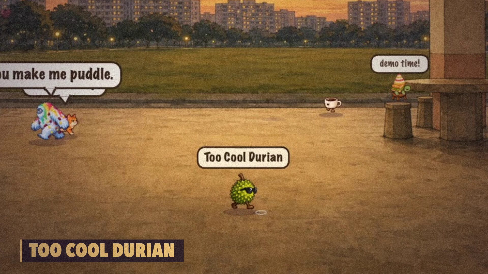
Common Ground Makeathon · Design × Tech · 11 Oct 2026
The Commons
a room that builds itself
The idea
Scan a QR. Add one thing to the room.Codex makes it real while you watch — credited to you.
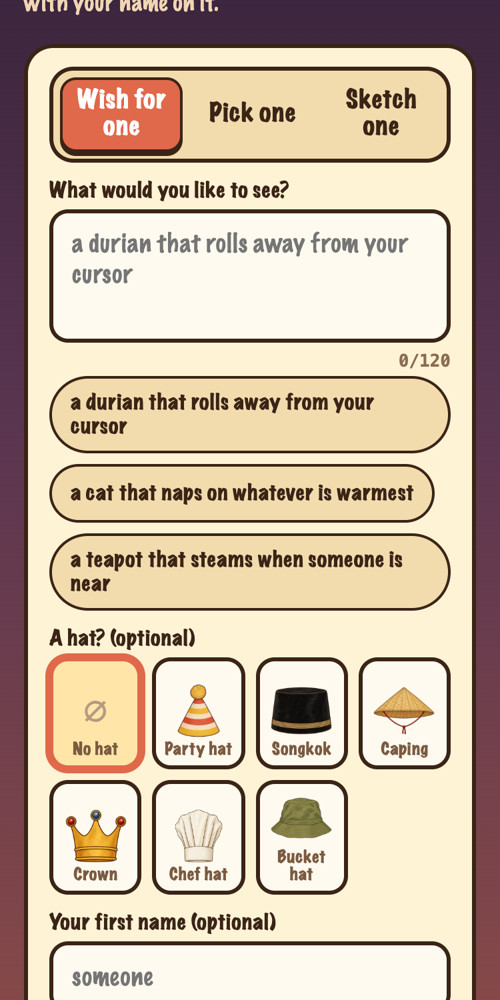
1 Wish for one
Codex writes it. Code, then art.
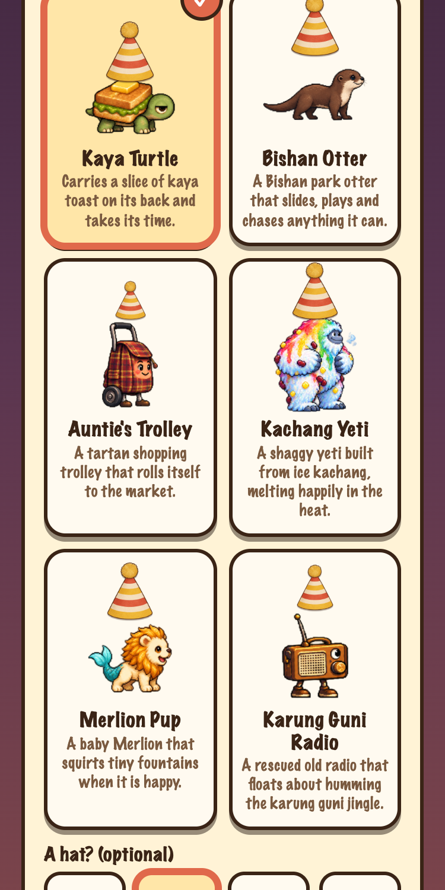
2 Pick one
6 presets + 6 hats. Instant.
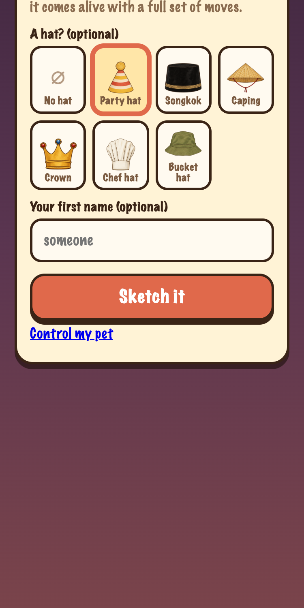
3 Sketch one
gpt-6-luna draws it.
Live demo
Scan → wish → watch it walk in
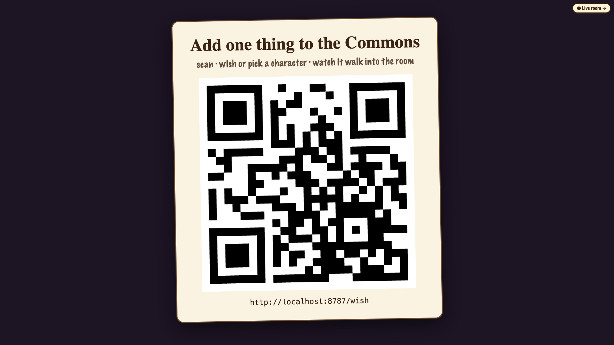
1. scan
→
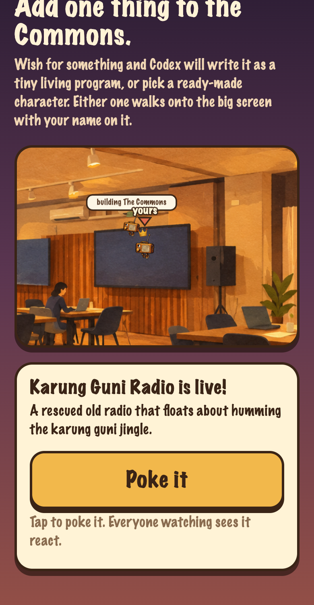
2. wish · status on phone
→
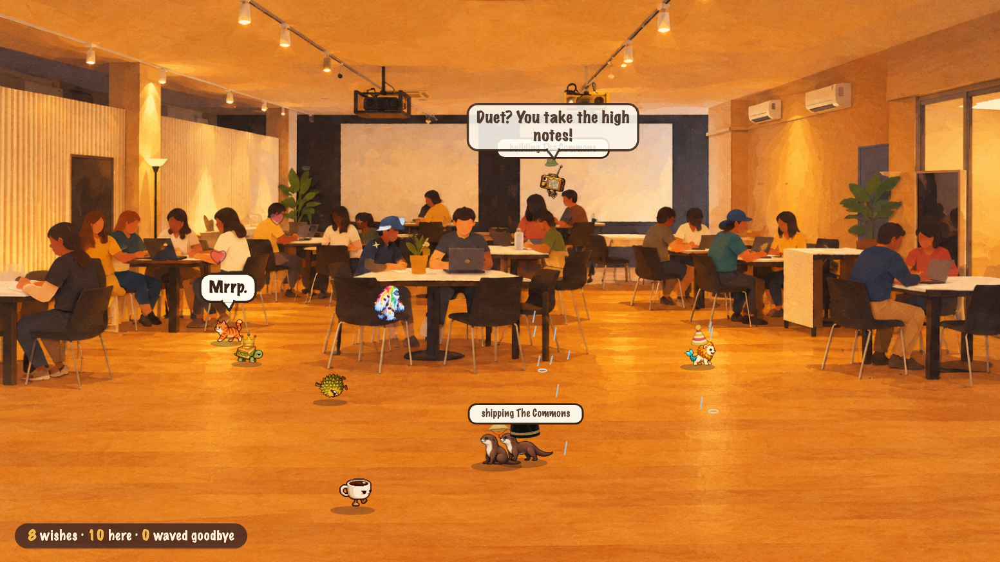
3. it lands in the projected room · live in ~65 s
No app, no account. Everyone in the room is looking at the same screen — and the creature on it has their name on it.
Behind the scenes
The Codex loop
Phone → POST /api/wish
↓
Screening · local Codex, gpt-6.1-sol ~7 sstructured output: allowed · thingSummary · spritePrompt · bleed
↓
Queue · concurrency 3 · flood guard 40
↓
Codex SDK thread · gpt-6.1-sol · low effortworkspace-write sandbox · no network · writes thing.js ~30 s
↓ runs check-thing.mjs ↑ reads errors, fixes
Server re-check (authoritative) · one follow-up turn max
↓
LIVE · sprite sheet drawn in parallel (gpt-6-luna)
checking the wish…
accepted: A durian wearing sunglasses bobs confidently and gives a cheeky little wiggle.
drawing it
Codex is writing it
wrote thing.js (91 lines)
check → passed
server re-check → passed
code passed in 33.4s
sprite ready
LIVE: Too Cool Durian (built by Codex in 33s)
real log lines from the workbench rail
Behind the scenes
The thing contractCodex writes only behaviour. One file, 6 KB max, no imports.
export default { name: "Too Cool Durian", tags: ["food","spiky"], zone: "ground", size: 1, update(me, world, dt) { if (world.steer(me, {x: s.tx, y: s.ty}, 85) < 18) { // wander in depth, not just left-right } const spots = world.spots().filter(q => !q.occupant); if (world.goTo(me, s.spot, 100)) me.say("VIP."); }, onMeet(me, world, other) { me.signal("cool", other.id); world.fx("sparkle", me.x, /* head */); }, onPoke(me, world) { me.vz = 450; me.say("Designer spikes."); } };
world APIsteer · goTo / leave · nearby / nearest · onMeet · onSignal / me.signal · fx · seeded random()
Reads world.scene: floor trapezoid, air band, spots (seat / table / rest / perch). No hard-coded coordinates — the room can change.
forbiddenimport · require · fetch · eval · Function · window · document · Math.random · setTimeout · process · async/await · while(true)
Quality bar: move in depth · use a spot · react to neighbours
Behind the scenes
Codex fixes its own bugstools/check-thing.mjs — the same script runs in Codex's sandbox and again on the server
1 · Static ban listforbidden identifiers, 6 KB cap, shape (name, tags, zone, size, update)
2 · node:vm simulation3600 ticks (60 s of room time) · stub world · dummy neighbours wander close · signals + pokes injected · 50 ms timeout per call · code generation disabled
3 · Assertsevery me.x / y / vx / vy / angle / scale stays a finite number · state is plain JSON · target args valid
4 · Verdictwarnings for flat movement, no spot used, ignores neighbours
// Codex reads this, edits thing.js, re-runs
{
"ok": false,
"errors": [
"me.vy is NaN after update",
"banned identifier: Math.random"
]
}
…fix…
{"ok": true, "errors": []}
shape of the output: {ok, errors[], warnings[]} · illustrative example errors
Fails twice? Nothing goes live. Only passing code reaches the room.
Behind the scenes
Codex draws tooone unified action map: every character, one 4×3 sheet
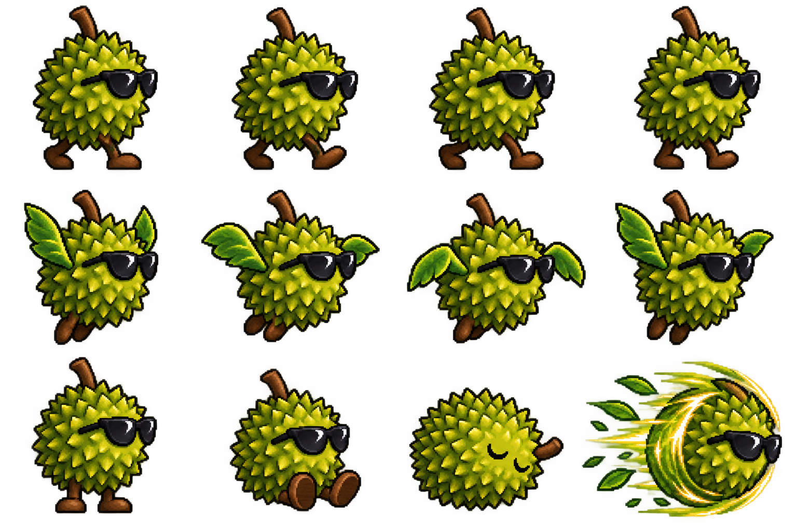
the real sheet, drawn by gpt-6-luna via Codex · 1536×1024
cells 1–4 walk
cells 5–8 fly
cell 9 idle 10 sit 11 sleep 12 special
cells 5–8 fly
cell 9 idle 10 sit 11 sleep 12 special
slice-sheet → frames.png + anim.json{frameW, frameH, count: 12, anims: {walk, fly, idle, sit, sleep, action}}
The engine picks the frame from the thing's motion — no per-character art code.
Behind the scenes
Point a phone at any roomphoto → gpt-image redraw (~17 s) → Codex vision maps it (~15 s) → sliders → live
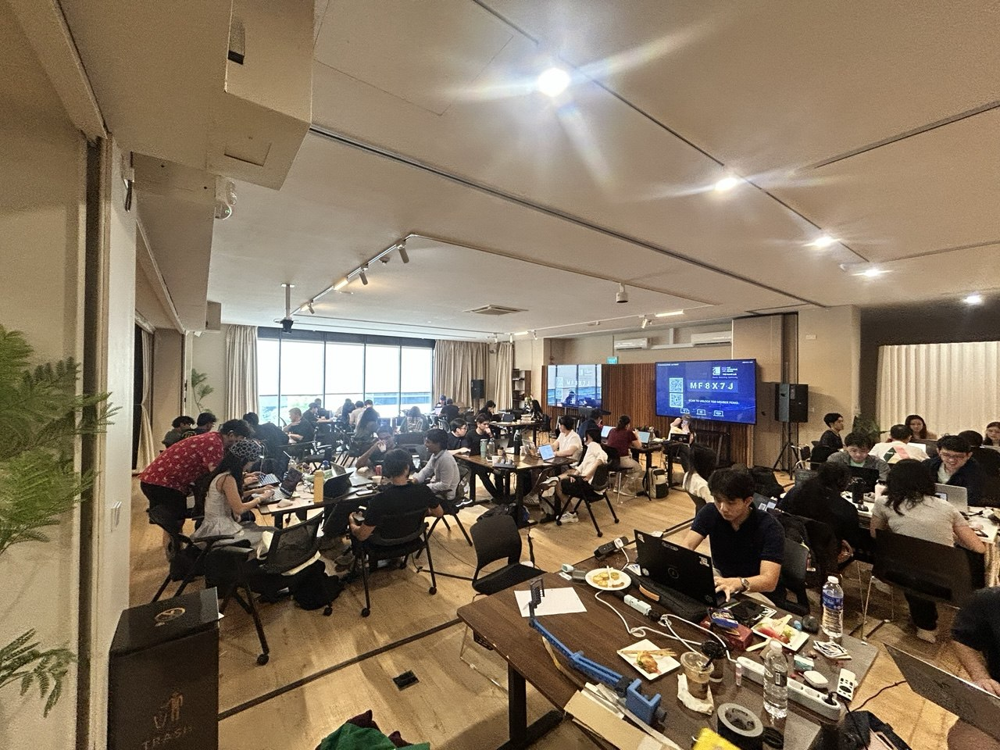
1. the real venue photo
→
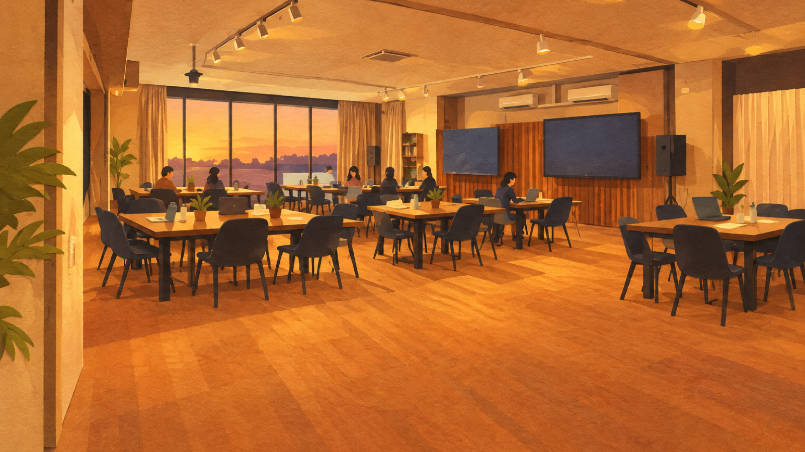
2. paper-style redraw
→
Codex vision, outputSchemafloor trapezoid · air band · ceiling
depthScale · up to 10 spots
(seat / table / rest / perch)
depthScale · up to 10 spots
(seat / table / rest / perch)
3. host nudges sliders → Use this room
Creatures re-clamp to the new floor with a hop. The only OpenAI API call in the whole system is this image edit.
Behind the scenes
The engine
- Depth floor. Feet stay in the trapezoid; nearer = bigger.
- Spots. Stools, tables, rests, lamps: goTo pins you there.
- Neighbours. Tags, onMeet, signal — they react to each other.
- Hats · moods (sleep, moody) · status + 3-digit PIN.
- Rooms grow. A new room opens at 10 characters.
- Quarantine. A thing that throws goes "resting…", the show goes on.
real room, real creatures
Behind the scenes
Architecture: one Node process
server/ plain httpREST + SSE, with 2 s polling fallback for tunnels that buffer
Persistencemanifest.json + per-thing folders (thing.js, frames.png, anim.json)
Phones → cloudflared quick tunnel → localhost:8787projector on localhost
Local Codex CLI on a ChatGPT loginscreening · thing.js · sprite sheets · room mapping via @openai/codex-sdk
gpt-6.1-sol (low effort) for text + code
gpt-6-luna for images
gpt-6-luna for images
OpenAI API key: only the room-photo redrawkept out of Codex's environment
Honest note: the app was written with Claude Code agents. Codex is the runtime engine.
Best Use of Codex
Codex is the runtime
- Screens every wish · writes its program
- Tests it · fixes its own bugs
- Draws the sprite sheet · maps your room
Live, in front of the audience.
Remove Codex and nothing exists.
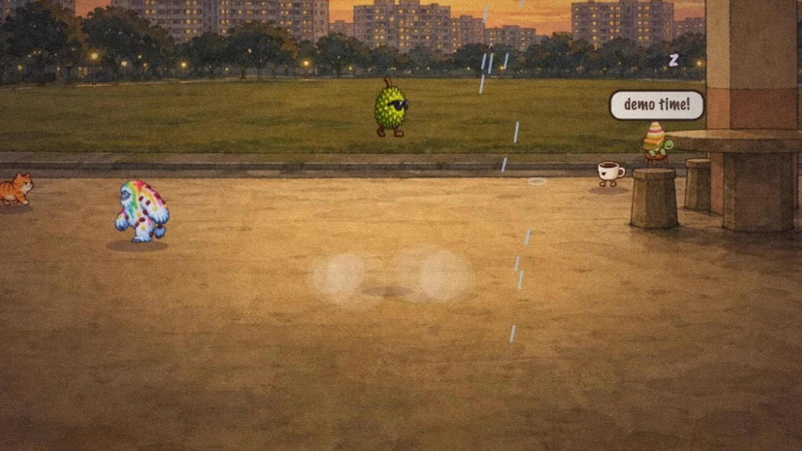
Scan & add one thing
The Commons
Wish it. Watch it walk in.
Thank you.

scan · wish · watch